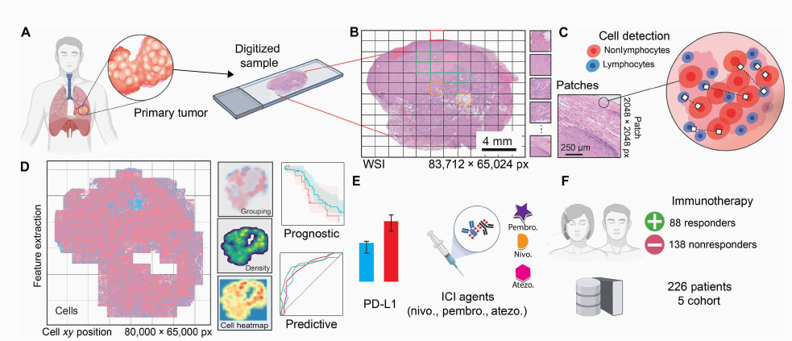
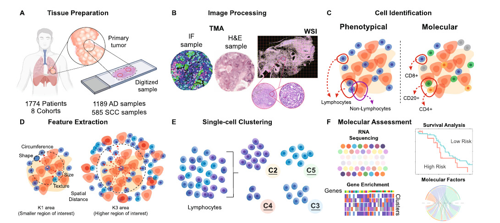

Deep learning pipelines that quantify tumor-infiltrating lymphocyte (TIL) spatial patterns in H&E whole slide images to predict immunotherapy response in lung cancer — validated across 226 patients in 5 cohorts.
As a Graduate Research Scientist at Emory University / Georgia Tech (2018–2024), in collaboration with the Madabhushi Lab at Case Western Reserve University, developed two interconnected computational pathology pipelines — HistoTIL and PhenoTIL — for automated analysis of tumor-infiltrating lymphocytes (TILs) in H&E-stained whole slide images (WSI).
The work produced data models and visualizations for 4,000+ histopathology images, scalable deep learning pipelines running on HPC and cloud resources, and machine learning models predicting patient outcomes and immunotherapy response — resulting in multiple peer-reviewed publications in Nature, Science Advances, and The Lancet, and three US patents.

(A) Primary tumor biopsy digitized to a WSI at 83,712×65,024 px. (B) Patch tiling (2048×2048 px) for GPU-accelerated processing. (C) Per-patch cell detection: lymphocytes (blue) vs. non-lymphocytes (red). (D) Spatial feature extraction: cell XY positions, density heatmaps, and immune clustering. (E) ICI outcome prediction for pembrolizumab, nivolumab, and atezolizumab. (F) Validated on 226 patients (88 responders / 138 non-responders) across 5 cohorts.
Lung cancer biopsy slides digitized to gigapixel whole slide images (~83,000×65,000 px). OpenSlide-based ingestion followed by non-overlapping 2048×2048 px patch tiling for GPU-parallel processing. Tissue-background separation filters out uninformative regions before inference.
Deep learning model (PyTorch) detects individual nuclei per patch and classifies each as lymphocyte (TIL candidate) or non-lymphocyte based on morphological features in H&E stain — no special staining required. Cell XY coordinates are recorded at slide-level resolution (80,000×65,000 px).
From cell positions, computed spatial immune features: TIL density heatmaps, immune cell grouping/clustering metrics, proximity of TILs to tumor nuclei, and niche-level aggregations (PhenoTIL approach). These spatial phenotypes capture immune architecture that raw cell counts cannot.
Trained scikit-learn and PyTorch models on extracted spatial features to predict: (1) overall survival (prognostic) and (2) response to ICI agents — pembrolizumab, nivolumab, atezolizumab (predictive). Models outperformed PD-L1 expression alone in several cohorts.
Validated across 226 patients in 5 independent cohorts (NSCLC and SCLC) from multiple institutions. Pipelines containerized with Docker for reproducibility and run on HPC + cloud resources to handle 4,000+ WSI at scale.

The PhenoTIL pipeline from tissue preparation through molecular assessment: image preprocessing, cell identification, spatial feature extraction, immune niche clustering, and multi-modal integration with clinical outcome data.
Deep computational image analysis of immune cell niches reveals treatment-specific outcome associations in lung cancer
nature.comComputational pathology features of immune architecture predict clinically relevant outcomes in small-cell lung cancer (SCLC)
nature.comSpatial interplay patterns of cancer nuclei and tumor-infiltrating lymphocytes (TILs) predict clinical benefit for immune checkpoint inhibitors
science.orgA prognostic and predictive computational pathology image signature for added benefit of adjuvant chemotherapy in early stage NSCLC
thelancet.com